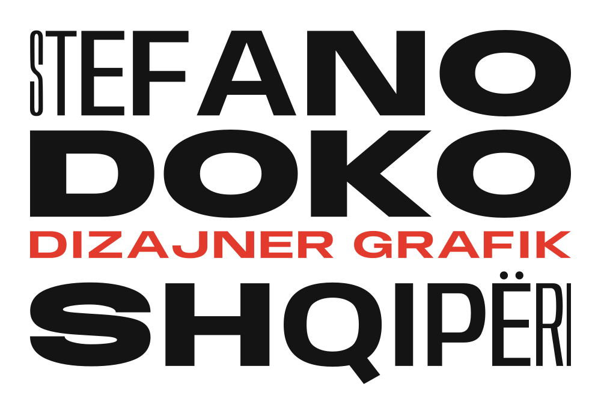

One family, many voices. STEFANO climbs from hairline-condensed to black-extended, one step per letter, and DOKO lands at full volume; SHQIPËRI answers, getting quieter. Every line is justified to the same measure, so the sizes fall where the words fall.